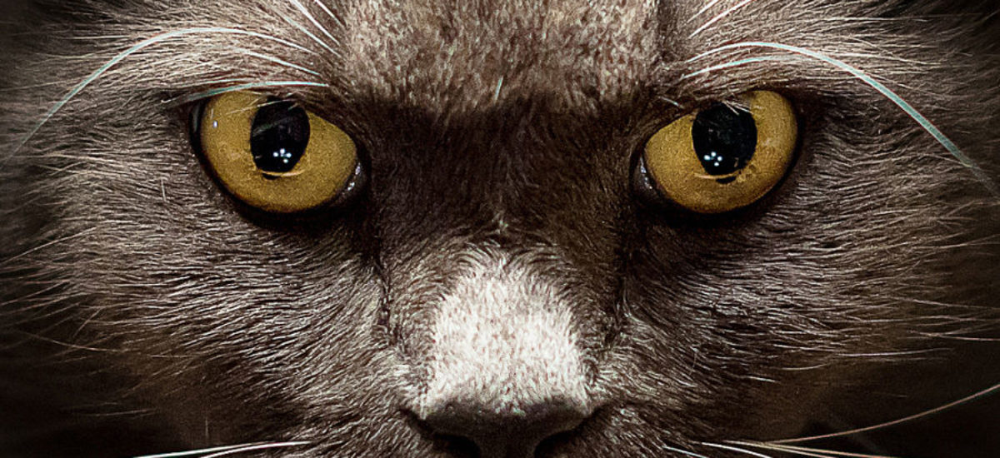
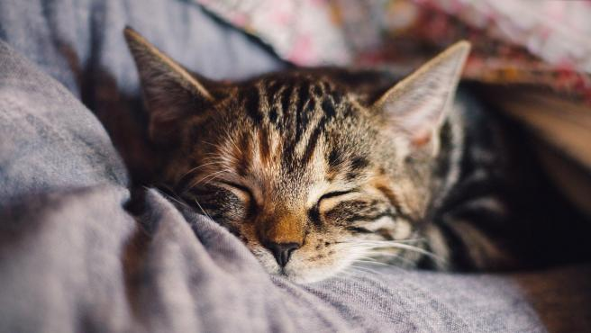
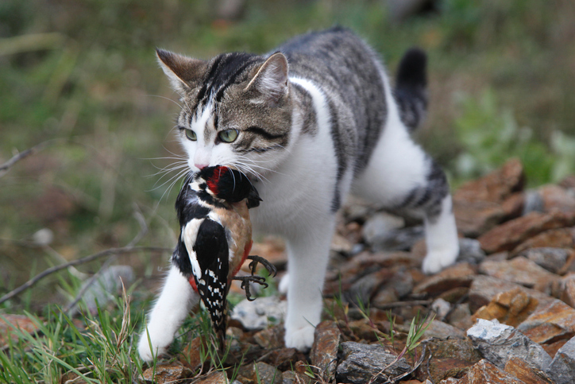

Sus instintos los hacen estar alerta siempre de todo lo que pasa alrededor, son extremadamente curiosos y siempre estan haciendo travesuras.

Aunque son animales muy activos, a su vez, su metabolismo gasta muchas energias en esos pequeños momentos de agilidad, por lo que pueden llegar a dormir hasta 3/4 partes del dia... Son unos verdaderos dormilones.
